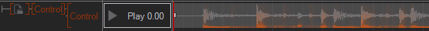

Video
Table of Contents
 | Live Video | This node provides video input from SDI/DVI input cards, webcams, TV tuners, DV device, etc. as a texture. |
 | Movie Clip | This node loads movies of many file formats and provides their content as a texture. |
 | Movie Frame | This node provides single frames of a movie clip. |
| Movie Stream | This node provides single frames of a movie stream. |
Live Video
The Live Video Node enables the display of live video content in Ventuz scenes. This live video can be mapped on any geometry just like any other kind of texture. Sources for live video can be e.g. Web Cameras, Digital Video Cameras, DVI and SDI Capture Cards and any other kind of input that can be connected to video input boards like the Blackmagic DeckLink video card.
The property Ordinal specifies the device which provides the video frames. The list of these devices can be edited in the Video section of the Audio Video Configuration. The methods Disable and Enable pause and resume the video input stream and shows in pause state either the last frame, black or white depending what you configured in the Board Options . The Live Video Node provides the live video frames in the Texture output property. This one has to be bound to a Texture node.
The output properties give information about the state of the current video source:
VideoSyncing: Set if the video node is enabled and Ventuz is syncing to the incoming video signal. If no signal is connected or it cannot be recognized the Live Video node keeps VideoSyncing set.
VideoRunning: Set if the video node is running and updates the video frames. If one has paused the video by calling the Disable method this property will be unset. Please note that all Live Video nodes that access the same physical video stream will change their VideoRunning state if just one node has called Enable or Disable.
VideoError: Set if no physical video input is available at the current Ordinal (Off) or the video failed to initialize. (see Ventuz log for further details)
SecondField: Indicating if the 1st or the 2nd video field for interlaced formats is currently processed. If the video is progressive or not available at all (Video Error) the property is set to false.
VideoWidth/VideoHeight: Set to the video size in pixels if VideoSyncing and VideoError are cleared. If the video is paused (VideoRunning cleared) this value are still valid. If the values are undetermined or the video input is in syncing or error state VideoWidth and VideoHeight are set to -1. Please note that interlaced input signals report the full-frame size here. Some boards and signals may return an odd number of full-frame lines - dividing this value by two is not always the correct way to determine the actual height of the field!
Configuring Ancillary Data (Timecode, etc)
To read ancillary data from an SDI input, first check Enable Ancillary Input in the Machine Configuration. Then click on Edit Custom Model at the bottom of the properties window of the live video node. This allows to add reading certain kind of information:
| Name | Description | Standard | Supported on |
|---|---|---|---|
| LTC_ | LTC timecode | RP 188 | Deltacast, DVS, Black Magic |
| VIT1 | VITC timecode field 1 | RP 188 | Deltacast, DVS, Black Magic |
| VIT2 | VITC timecode field 2 | RP 188 | Deltacast, DVS, Black Magic |
| AFD_ | Advanced Format Description | SMPTE 2016 | Deltacast, DVS |
Timecodes are accepted on any line and identified by the distributed binary bits. Deltacast expects AFD only on line 11, DVS accepts any line.
Interpreting AFD Information
AFD returns a single integer. It contains the aspect ratio bit in bit 0 (0 is 4:3, 1 is 16:9), and the AFD code in bit 1 to 4. This corresponds with bits 2 to 6 in the ancillary packet. A value of -1 indicates that no AFD was found:
How to interpret the data (for details see SMPTE 2016):
| AFD Code | Value 4:3 | Description for 4:3 | Value 16:9 | Description for 16:9 |
|---|---|---|---|---|
| -/- | -1 | AFD not found | -1 | AFD not found |
| 0000 | 0 | undefined | 1 | undefined |
| 0001 | 2 | reserved | 3 | reserved |
| 0010 | 4 | not recommended | 5 | not recommended |
| 0011 | 6 | not recommended | 7 | not recommended |
| 0100 | 8 | letterbox with bar data | 9 | letterbox with bar data |
| 0101 | 10 | reserved | 11 | Reserved |
| 0110 | 12 | reserved | 13 | Reserved |
| 0111 | 14 | reserved | 15 | Reserved |
| 1000 | 16 | full-frame 4:3, same as coded | 17 | full frame 16:9, same as coded |
| 1001 | 18 | full-frame 4:3 | 19 | pillarbox 4:3 |
| 1010 | 20 | letterbox 16:9 | 21 | full-frame 16:9 |
| 1011 | 22 | letterbox 14:9 | 23 | pillarbox 14:9 |
| 1100 | 24 | reserved | 25 | reserved |
| 1101 | 26 | full-frame 4:3 with alternate 14:9 center | 27 | pillarbox 4:3 with alternate 14:9 center |
| 1110 | 28 | letterbox 16:9 with alternate 14:9 center | 29 | full-frame 16:9 with alternate 14:9 center |
| 1111 | 30 | letterbox 16:9 with alternate 4:3 center | 31 | full-frame 16:9 with alternate 4:3 center |
AFD Code 0100 (8/9) requires additional information about the size of the letterbox / pillarbox bars. This data is contained in the AFD data, but currently not reported to Ventuz. This is used to specify the bars when the content is wider than 16:9.
To clarify this encoding, here is some background information. The ancillary data stream encodes the first word of the ADF as follows:
| bit 9 | bit 8 | bit 7 | bit 6 | bit 5 | bit 4 | bit 3 | bit 2 | bit 1 | bit 0 |
| !Parity | Parity | 0 | code3 | code2 | code1 | code0 | Aspect | 0 | 0 |
The reason for this encoding is that some hardware operates with 8-bit and not the full 10-bit, throwing away the two least significant bits.
Ventuz shifts the data by two, so the value ends up looking like this:
| bit 31..7 | bit 6 | bit 5 | bit 4 | bit 3 | bit 2 | bit 1 | bit 0 |
| 0..0 | 0 | 0 | code3 | code2 | code1 | code0 | Aspect |
Movie Clip
Overview
The Movie Clip node gives the Ventuz operator more control over initialization and playback of movie clips. It provides frame accurate playback for use in Ventuz Cluster setups and is able to play the most common video container formats like WMV, AVI, MOV and MKV. Moreover, it is capable of playing Quicktime movies in Ventuz. For all full list of supported video codecs, see Supported Video Formats. The video decoder in this node is based on the FFMPEG project and provides the best performance compared to pre-installed DirectShow and WMF decoders.
The Node is also able to playback Image Sequences
If you assign a Material Stage - "Base + Alpha" and there is no Movie Clip loaded, the geometry which has the Empty Movie Clip assigned will appear transparent but is still touchable. Same goes for the Movie Stream and Movie Frame!
Configuration
The configure button at the bottom of the property editor brings up the movie clip configuration dialog.
Buffers
Here the way video frames are buffered is configured:
- Normal buffering is sufficient for normal playback and four point looping. The number of buffers used can be adjusted. More buffers means more memory usage but improved reliability, especially with badly encoded streams. Using the Loop feature will double the amount of buffers needed.
- Reverse Play will do additional buffering to allow backward playback with the Scrub property. The number of buffers and the amount of memory used will be tripled!
- Buffer All will decode the entire clip into memory, allowing to seek immediately to any frame, at a high memory cost.
Audio is only available in Normal mode.
In some situations, the node may need to allocate more buffers than specified in the configuration. The amount of memory used for video and audio buffering can be monitored with the MemoryMB output property.
Interlacing
Only use this when playing interlaced movies to interlaced SDI outputs
This will guarantee that the fields of the movie will end up in the right fields of the SDI output. In any other scenario than interlaced playback to interlaced SDI, this will mess up the replay.
Color Space
Usually, Ventuz will automatically detect color space and range. But some codecs give false information, and some clips are badly encoded. These options allow overriding the automatically detected. When using these options, be careful not to do more harm than good! These options do not apply to RGB encoded clips or images.
Color Space is one of the YUV color spaces. The difference between these is largest for saturated colors, so when in doubt use clips with color bars to check. On normal material the difference is often hard to see.
| Name | Description |
|---|---|
| auto | use automatic detection (recommended) |
| BT601 | used by NTSC & PAL |
| BT709 | used by modern HD standards |
| SMPTE240M | interim specification, replaced by BT709 to which it is similar |
| FCC | FCC version of NTSC, basically BT601 rounded to two decimals |
Many codecs encode YUV in a limited Color Range from 16 to 235 (Y) or 240 (UV), emulating the foot room and headroom of an analog signal. Just like the color space, this is usually detected automatically. If it should be detected wrong, a significant change in contrast and brightness will be seen, and the Color Range option can be used to override.
Advanced
Disable Threading
For most codecs, each MovieClip node will create as many threads as there are cores available. It may be counterproductive if more clips are played at the same time since the threads will get in each other's way. Also, they may steal time from the Ventuz main thread, which will cause stutter.
- Playing many clips: enable the flag
- Playing one large clip and multiple small ones: it is the best to disable threading for the small ones and keep threading enabled for the large clip.
Enable Audio Compensation
Often the audio hardware is not perfectly in sync with the video hardware. In such cases, the audio must be slowed down or speeded up to compensate the tempo of long video clips. This is called Audio Compensation and is explained in detail at the Sound Nodes.
Ignore Clip Duration
Once set the movie player won't try to determine the movie clip duration anymore (thus the node's Duration output will always be -1). Consequently, the player won't stop at a certain duration but only when the physical end of the file is reached. As a downside seeking will be less safe. The player will try to seek to a certain position; if it doesn't work, it will just remain in seeking state.
Property Description
The Movie Clip node provides several input properties for managing and controlling playback and output properties which informs about the state of the active movie clip.
In the category Movie, the input property File specifies the movie file to play. Enabled prepares the node for the actual playback. If a file is specified and the node is disabled, the clip file will be parsed to retrieve information about duration, resolution, etc. No textures are reserved in this state and the actual decoder is not initialized. A movie clip can however only be played back if the node is enabled! If the file contains multiple video streams, one can be selected with the VideoStream property. The property AutoPlay specifies if playback should start immediately after the node is enabled and all necessary resources are initialized. Async defines if all necessary initializations should happen in the background to avoid render stalls.
In Async mode, enabling a movie and starting playback can have variable duration depending on the movie characteristics. The Seek operation is always asynchronous.
If AutoMipMap is enabled, MipMaps will be generated for every video frame texture to provide higher render quality especially if these textures are scaled or rotated. This feature is only available on graphics boards which support hardware mipmap generation!
OverrideFramerate allows you to change the playback framerate of MovieClipImageSequence.
NoMovieColor determines the color of the output texture if the movie file is invalid or no file is loaded. You can choose from Black, Transparent and White.
In the category Seek, the SeekTo property specifies the position (in seconds) in the movie clip to which the decoder should move. AfterSeek defines the behavior after the seek operation has completed. Seeking is triggered by the Seek method. Possible settings for AfterSeek are:
| Preserve | The node stays in the active state (Play or Pause). |
| Play | The node starts playing once seek has completed. |
| Pause | The node seeks to the requested frame, displays it and pauses the playback. |
The Scrub property enables scrubbing. In this mode the clip will follow the value of SeekTo directly. If the clip is configured for reverse play, it is possible to seamlessly scrub forwards and backward as long as the decoding can keep up with the speed. Obviously the computer needs to be able to decode the clip at double speed if it is supposed to scrub at double speed, scrubbing backward is even a bit slower. If the clip is configured to buffer all frames, scrubbing will never stutter.
With the Control methods, playback can be started or continued (Play) or paused (Pause). Restart will restart the clip from the beginning. If the clip is configured for reverse replay, you can use the Reverse property to switch the replay direction backwards. Restart and AutoPlay will then seek to the end of the movie and play backwards, too.
During reverse replay, loop points are ignored.
The Loop property can be set to loop playback of a movie. Four-point looping is supported. The Begin and End properties specify where playback starts and ends. With looping enabled, playback will start at Begin and play until LoopEnd, then jump to LoopBegin and continue looping until Loop is disabled. Once Loop is disabled it will continue to play back until End is reached.
The properties in the category Audio can be used to adjust the audio playback of the movie clip and to select a playback device for the audio channel. Audio playback can be completely disabled with the Audio property and the volume can be adjusted with the Volume property. The MergeMonoStreams flag will merge all adjacent mono audio streams into one before processing the audio. The Movie Clip node is capable of playing back on multiple output Ordinals.
Each of these Ordinals can be mapped to the physical stereo pairs of your machine in the Audio Video Configuration. You can define several mappings of a stream and channel to an output ordinal by adding any number of Property Groups with the  in the Property Group List inside the Property Editor. The Stream dropdown defines which stream of the File to use. For the Channels you can choose to use any single Mono Channel, two consecutive channels as Stereo Channels or to Downmix the whole stream into a single stereo signal. In the Flags property you can turn on several options: Flip L/R swaps the left and right channels if it plays back two channels as stereo. Invert left/right phase invert the polarity of either channel. And Mid/Side to Stereo converts a mid or side channel to a stereo channel. Ordinal selects the Logical Device Ordinal used for this mapping. Gain changes the sound level of this input and the Balance adjusts the playback volume between the left and right audio channel.
in the Property Group List inside the Property Editor. The Stream dropdown defines which stream of the File to use. For the Channels you can choose to use any single Mono Channel, two consecutive channels as Stereo Channels or to Downmix the whole stream into a single stereo signal. In the Flags property you can turn on several options: Flip L/R swaps the left and right channels if it plays back two channels as stereo. Invert left/right phase invert the polarity of either channel. And Mid/Side to Stereo converts a mid or side channel to a stereo channel. Ordinal selects the Logical Device Ordinal used for this mapping. Gain changes the sound level of this input and the Balance adjusts the playback volume between the left and right audio channel.
Several output properties inform about the movie characteristics and initialization and playback states. In the category Movie, the Width and Height of the movie frames are provided. FPS provides the frames-per-seconds encoded in the movie and Duration its duration in seconds. If a movie clip has meta-date embedded, this information is made available in XML format by the Meta property. All of the information is available even if the node is not enabled because they are gathered in an initial file parse step. The Meta property can be evaluated with the XPath and XML nodes.
The Position property provides the active playback position in seconds. This property is set to -1 if the node is not enabled or if the movie file cannot be parsed or decoded. The IsLoaded property is set to true if the movie file has been loaded successfully. Additionally, the Loaded event is fired. If a movie clip cannot be played for any reason, the Error event is fired. The IsEnabled property is set to true if enabling the node has succeeded without errors. IsPlaying is set to true during playback and set to false if the playback is paused or the end of the clip is reached. Every time the clip loops, the Looped event fires. When Loop is disabled and the clip reaches the End position, the Completed event is fired. Completed is not fired should the clip reach or pass the End position in Loop mode. The Seeked event is fired if a seek to a new position has finished and the movie is ready for playback again. The property Texture provides the current video frame and has to be bound to a Texture node. The MemoryMB property tells the amount of memory used for audio and video buffers. This may increase during playback if the clip is badly encoded.
Animation Control
Additional to the event driven control, The Movie Clip Node can also be controlled by a Keyframe Animation. To do so simply bind the control Property to any Keyframe Animation Node.

The resulting animation channel allows you to set 3 different keyframe types.
| Type | Description |
|---|---|
| Play | starts the movie playback at a given time that can be set by the keyframe value |
| Pause | pauses the movie clip at the time set in the keyframe value |
| Stop | stops the movie playback at the given time. It does not carry a time but looks to its right and left to seek to the needed frame. Sample 1 and Sample 2 at the bottom explain the behavior in detail. |
The Pause keyframe will always carry zero when it is created and you have to manually set the keyframe value to the desired time !
To change the type of an existing keyframe, click the right mouse button to open the context menu.
The behaviour of the Stop Keyframe requires some more explanation.
In Sample 1 we see the keyframes, the first one is Play and the two following ones are Stop keyframes. In this case the movie will start playing until the first Stop keyframe is reached and stay at that frame.
Sample 2 behaves a little different, in this case the movie starts playing, but when it hits the Stop keyframe it will seek to the position of the Pause keyframe to it's right.
It would show the same behavior at the Stop keyframe if the right one would be a Play instead of a Pause.
| Sample 1 | |
| Sample 2 |
So we can make a general statement. The Stop keyframe first of all looks to the right to see if there is keyframe with time he needs to prepare for, if this is not the case, he looks to the left and takes over the current playback time.
Image Sequences
The Movie Clip Node can playback Image Sequences. The requirements are listed under the Movie Frame Node The OverrideFramerate property is used to determine how the sequence is interpreted. By default Image Sequences are interpreted as 25fps, but you can change that using this option. OverrideFramerate is only applied to Image Sequences, it is ignored for movie files.
Synchronous Seeking in a Cluster
When seeking a high-bitrate movie or multiple movies at the same time, it is very likely that the computer is not fast enough to immediately continue playback at the new position. This is especially problematic if multiple machines in a cluster are supposed to playback parts of the same movie clip.
A safe method to do is to pause the movie, then wait for a second for things to settle and send the play event.
Depending if the machine is part of a cluster, the movie clip node will behave differently:
Not in a cluster (GroupID zero): The movie will pause until enough frames are decoded to guarantee smooth playback.
In a cluster (GroupID not zero): If seeking failed to happen in time, a second seek is made to a time in the future, hoping that it's enough. This is like shooting clay pigeons, don't shoot where it is, but where it will be. If things went right, the first decoded frame will be slightly in the future and displayed until real-time and movie-time are synchronized again.
You will want to avoid or minimize this mechanism. It is thought as a last measure to get things synchronized if something went wrong.
ErrorCodes
| Ok | Everything is fine |
| BadFile | Unsupported file format |
| UnknownFormat | Unsupported video codec |
| UnsupportedFeature | E.g. unsupported colorspace |
| BadFormat | File is somehow corrupted or requires unknown features |
| NoVideo | No video stream found |
| InternalError | Unknown internal error |
| OutOfMemory | Not enough memory for all video frame buffers available |
| FfmpegError | Unexpected ffmpeg error |
| NoAudio | Audio enabled but no audio stream found |
| FileNotFound | Specified file was not found |
Movie Stream
The Movie Clip node can not play back true video live-streams, that is what the Movie Stream node is for. Instead of opening a particular file like the Movie Clip node, one must input an URL address to a Live Stream on a Server.
The two can easily be confused. For instance, Youtube videos must be used with the Movie Clip node, as they can be seek. Technically speaking, Youtube is just a file server for movie files. Still, some other streams using the same primary protocol (HTTP) are true live-streams and require the Movie Stream node. Rule of thumb: If it can't seek, use Movie Stream.
The Movie Stream node is not able to distinguish between a Stream and a File beforehand. When trying to access a file the node will behave strangely, so always manually ensure that the URL points to a stream.
The Movie Stream does not need as many Input Properties as the Movie Clip, since looping, seeking or restarting the stream is not possible. The properly properties and fired events are left out in the Movie Stream node. All other Properties as well as the Configuration are similar to the ones of the Movie Clip except the OverrideBufferSize. With this property you define the size of the buffer thats receives the stream. Internally the buffer is set to 1024 KB. The property value of 0kb means: use internal default buffer size. With values lower than 1024 KB you reduce the delay - with higher values you improve the stability of the stream.
Note that the Movie Stream node may not change the buffering method - it may not play the stream reverse nor buffer the whole stream before playing.
When pausing a movie stream, no more data is processed or requested from the internet. When unpausing the stream it will resynchronize and play the most recent data. It is not possible to pause and resume like a digital video recorder.
Supported Protocols
We have validated the http, udp and rtp protocols. Since the implementation is based on ffmpeg, other protocols supported by ffmpeg may work too.
Unsupported Protocols
HTTP Live Streaming or HLS, a method that cuts videos into small segments and uses modified M3U playlists to put things back together, is not supported.
Movie Frame
The Movie Frame node is almost the same as the Movie Clip node except that this node does not play movies in a common way. Instead, it accesses single frames of a video stream by frame index. The main application of this node is fast seeking within a movie clip that is optimized for such an operation, like Quicktime Animation movies.
The Movie Frame node does not handle any audio streams.
Image Sequences
The Movie Frame node is also able to playback image sequences. An image sequence is a list of images files that fulfill some requirements:
- all images have the same size, file and pixel format
- all files are in the same folder
- the folder must reside in the project folder (auto-import of an image sequence to the Project currently does not work)
- all files must have the same file extension for known image formats (e.g. png, jpg, tif)
- filenames must be indexed starting from zero or one
- the index portion must have a constant number of digits (e.g. 0000 to 2421)
- the indexed number must be continuous (without breaks) (e.g. 00 to 59 = 60 files)
- filenames must be equal (except the index portion)
Example: 200 files name from ImageSeq_0000.png to ImageSeq_0199.png
To select an image Sequence to be played back with the Movie Frame node, select the file open dialog on the File property of it and switch the browser to All File. Select one file of the sequence (this is usually the first file: 0000 or 0001).
Ventuz 4.3 removed a limitation that forced the Buffer All mode on.
Configuration
The configure button at the bottom of the property editor brings up the movie clip configuration dialog.
The way video frames are buffered is configured:
- Normal buffering is sufficient for normal playback and four point looping. The number of buffers used can be adjusted. More buffers means more memory usage but improved reliability, especially with badly encoded streams. Using the Loop feature will double the amount of buffers needed.
- Reverse Play will do additional buffering to allow backward playback with the Scrub property. The number of buffers and the amount of memory used will be tripled!
- Buffer All will decode the entire clip into memory, allowing to seek immediately to any frame, at a high memory cost.
In some situations, the node may need to allocate more buffers than specified in the configuration. The amount of memory used for video and audio buffering can be monitored with the MemoryMB output property.
Smooth Loops
The Loop property allows specifying a loop start point. The initial value of this property is -1, which disables this feature.
Imagine one wants to loop from frame 100 to 300, by having a mover or counter node controlling the Frame. Unlike the automatic looping feature of the Movie Clip node, Ventuz can not know that a jump back to frame 100 will happen, and when jumping back, there might not be enough time to seek, load and decompress the frame.
Setting the Loop property to 100 indicates to Ventuz that a jump back to frame 100 is intended, and the frame can be prefetched and stored, so they are immediately available when looping.
It is best to set the Loop property as early as possible. If the movie frame can be decoded at more than twice realtime, it is generally safe to set the Loop property during replay, prefetching the frames just in time.
Performance
When playing backward and forwards:
- Configure reverse play.
- Enable lots of buffers, at least 30. Backward play will be slower than forwarding. If you use more buffers, the difference will shrink.
- The number of buffers must be larger than the size of a GOP (group of picture).
- The more buffers you configure, the longer it will take for the movie to resync should it run out of the buffered range.
When seeking randomly, it is recommended to only use clips with codecs which have either:
- uncompressed video
- Quicktime Animation or other simple RLE codecs
- I-Frame (keyframe/Intraframe) only clips
- short-GOP (2-3 frames) clips
- Configure normal play if you don't intend to play reverse. Configure few buffers. Both will speed up the seeking.
If you can afford the memory for using the buffer all option, try it out. The buffers are stored in CPU memory, not on the graphics card, and if the codec uses YUV, the buffers will also use YUV, taking less than half the memory compared to RGB.